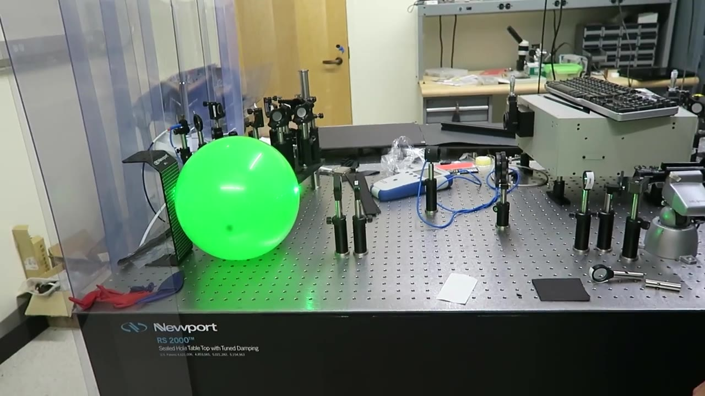
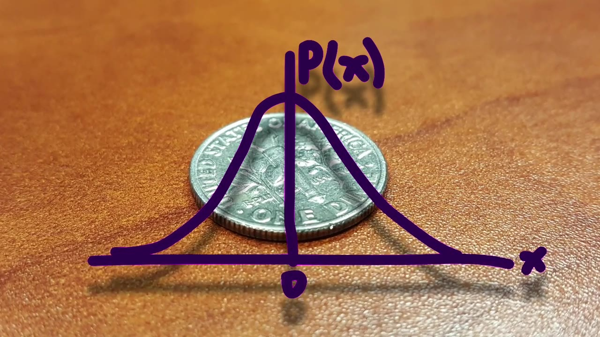
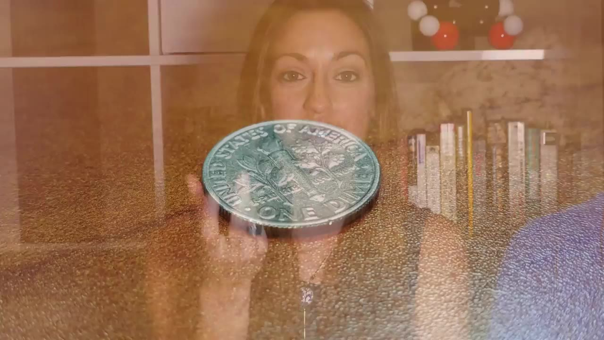

Lasers are famous for heating — laser cutting, laser hair removal, sci-fi laser guns. But there's one use of lasers that works in the complete opposite direction, and it's how we get matter close to absolute zero.
Watch on YouTubeLasers are the poster child for heat — laser cutters burn through metal, laser hair removal zaps follicles, sci-fi movies fire laser guns. But there's a use of lasers that does the exact opposite: it makes things colder.
But that sounds very strange — it's like adding energy to try to reduce the energy in the system. It's like trying to put out a candle with a flamethrower.— Diana Kwon
Atoms and molecules are constantly moving in random motion. Hot = fast motion. Cold = slow motion. So the challenge is: how do you use light — pure energy — to slow atoms down?
The key is that light carries momentum as well as energy. If an atom moving right absorbs a photon moving left, the photon's momentum pushes against the atom and slows it.
But atoms are picky — they only absorb specific wavelengths. The laser's wavelength must be tuned slightly longer than the atom's resonant frequency. When the atom moves toward the laser, the Doppler shift pushes the light into the "blue" (shorter-wavelength) end, and the atom absorbs it. When the atom stops moving toward the laser, the light passes right through.

Light has momentum as well as energy, which is strange, isn't it? Everyone knows light as energy, but it also carries momentum even without having mass.— Derek Muller
But atoms move in all directions. The solution: shine lasers from six directions — left, right, up, down, front, back. Every atom, no matter which way it moves, will encounter photons pushing against it. The result is "optical molasses" — atoms trudge through the laser field, slowed in every direction.
Scientists have cooled atoms to the microkelvin range — millionths of a degree above absolute zero. MIT once cooled a one-gram micro-scale object to 0.8 Kelvin, an incredible feat.
But you can never reach absolute zero. Heisenberg's uncertainty principle means you can never know both the exact position and momentum of a particle simultaneously — atoms always retain some residual motion.

You can never stop them completely. They will always have a little movement.— Derek Muller
This isn't just a lab curiosity. Laser-cooled atoms are the heart of atomic clocks — the timekeepers in GPS satellites. Without laser cooling, your smartphone's GPS would drift by kilometers every day.
